La tienda web, el panel y el inventario de las tres tiendas, en pocas páginas.
| Dirección | Para qué | Quién entra |
|---|---|---|
loscaseritos.com | La tienda que ve el cliente. | Cualquiera |
loscaseritos.com/panel | El panel: productos, fotos y precios. | Solo usted |
loscaseritos.com/inventario | El inventario: cobrar, stock, cajas y reportes. | Usted y cada vendedora, con su usuario |
Cada cosa se carga en un solo lugar: los productos y precios en el panel (el inventario los copia solo); el stock lo lleva el inventario, sumando lo que entra y restando lo que se vende.
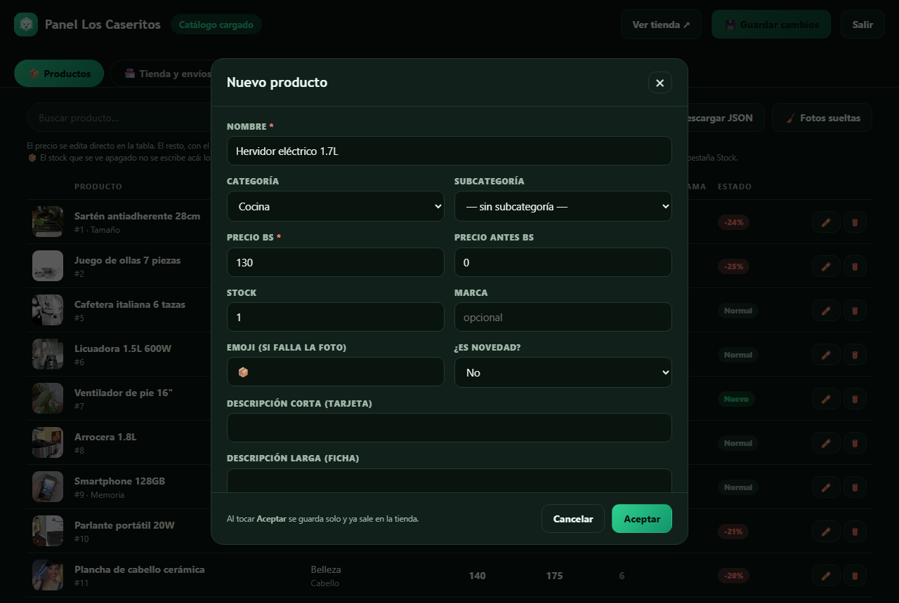
Si aparece una barra roja "No se guardó · Reintentar", tóquela. Casi siempre es falta de señal; el producto no se pierde.
Fotos que se ven bien: cuadradas o apaisadas, con el producto al centro, y la foto original (no una captura de WhatsApp). La tienda las muestra siempre enteras.
Precio: se cambia directo en la lista. Borrar: el tacho rojo. Si en ninguna tienda queda mercadería de ese producto, en el inventario se da de baja solo.
En la pestaña Tienda y envíos están el WhatsApp, el TikTok, la dirección, los pueblos de envío y los cupones (ahí sí hay que tocar 💾 Guardar).
Entre a loscaseritos.com/inventario con su usuario de dueño.
Arriba están estos botones. Qué hace cada uno:
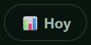 | Lo vendido hoy en cada tienda y las alertas. |
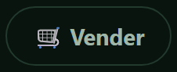 | Cobrar en el mostrador. |
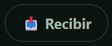 | Anotar la mercadería que llegó. |
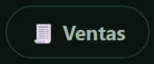 | Ver las ventas de un día y anular una. |
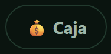 | Cierres de caja, gastos y retiros. |
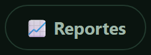 | Totales y ganancia de un período; se baja a Excel. |
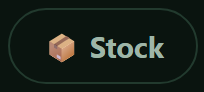 | Cuánto hay en cada tienda; contar y pasar a otra tienda. |
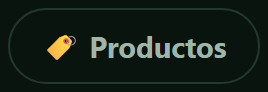 | Código de barras, costo y mínimo de cada producto. |
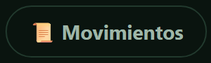 | Todo lo que entró y salió, quién y cuándo. |
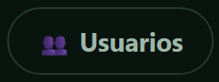 | Las cuentas de las vendedoras. |
Las vendedoras ven solo cuatro: Vender, Recibir, Ventas de hoy y Caja.
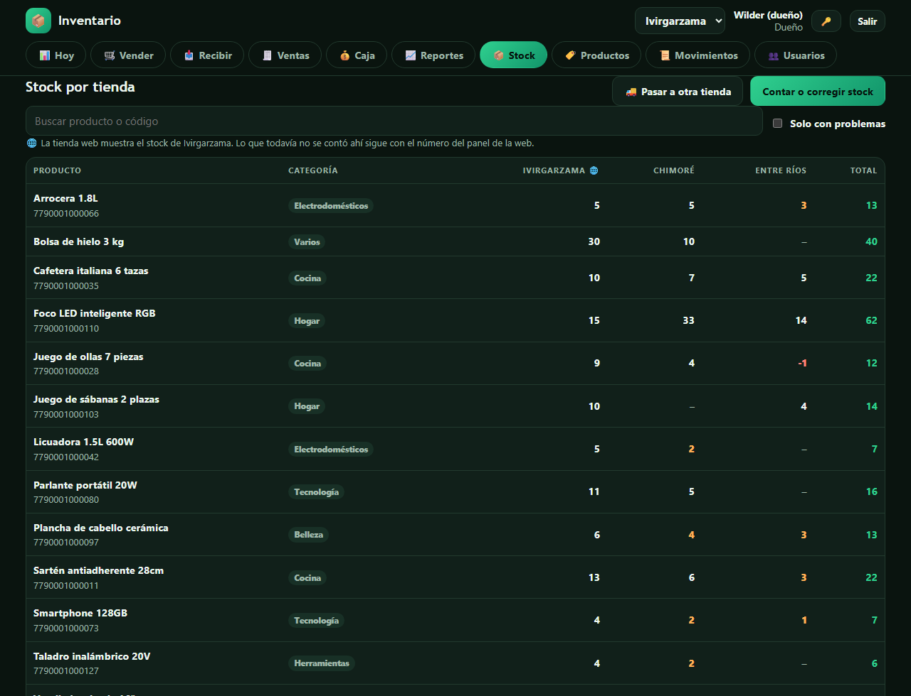
| Quiero… | Dónde |
|---|---|
| Cargar lo que hay en el estante (la primera vez, o corregir) | Stock → Contar o corregir stock. Escriba lo que hay de verdad. |
| Anotar mercadería que llegó | Recibir. En "¿De dónde viene?" elija De un proveedor, o la tienda que la mandó: así se descuenta de esa tienda. |
| Mandar mercadería a otra tienda | Stock → 🚚 Pasar a otra tienda. Baja en una y sube en la otra. |
La web muestra el stock de Ivirgarzama. Un producto que todavía no se contó ahí muestra el número que se puso en el panel.
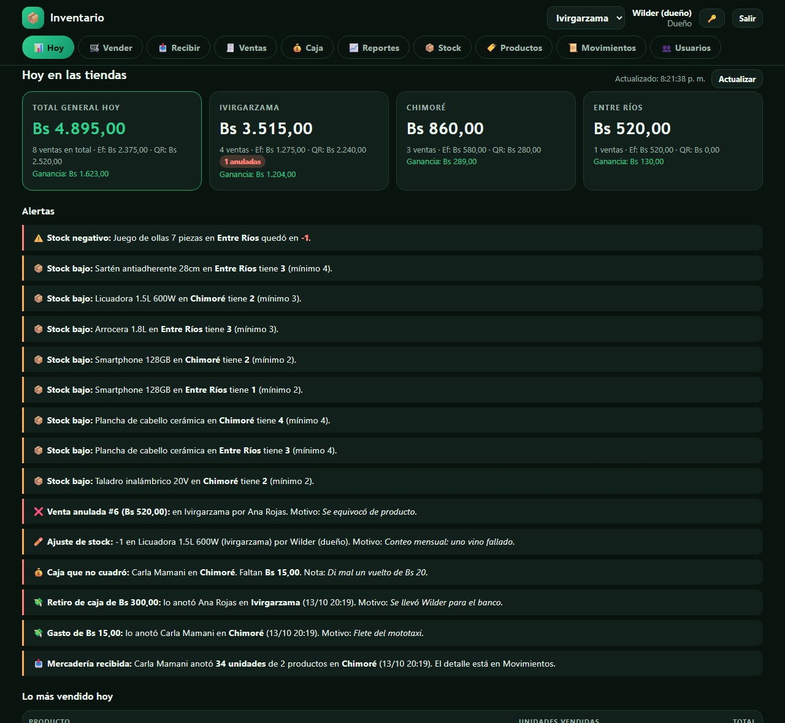
Arriba, lo vendido en cada tienda (efectivo, QR y ganancia). Abajo, las alertas: stock negativo o bajo, ventas anuladas, conteos que no coincidieron, cajas que no cuadraron o sin cerrar, gastos y retiros, y mercadería recibida. Mírelas todos los días: cada una dice quién y por qué.
| Lo que pasa | Qué hacer |
|---|---|
| Olvidé una clave (panel o inventario) | Doble clic en CAMBIAR-CLAVES.bat. A una vendedora: Usuarios → Editar. |
| "Demasiados intentos" | Espere 10 minutos. |
| Barra roja "No se guardó" en el panel | Tóquela para reintentar. |
| Un producto en negativo, o la web muestra un stock que no es | Cuéntelo en esa tienda (Stock → Contar). |
Dos cuidados: una cuenta por persona, y cada tanto, copiar la carpeta data a un USB o a la nube.